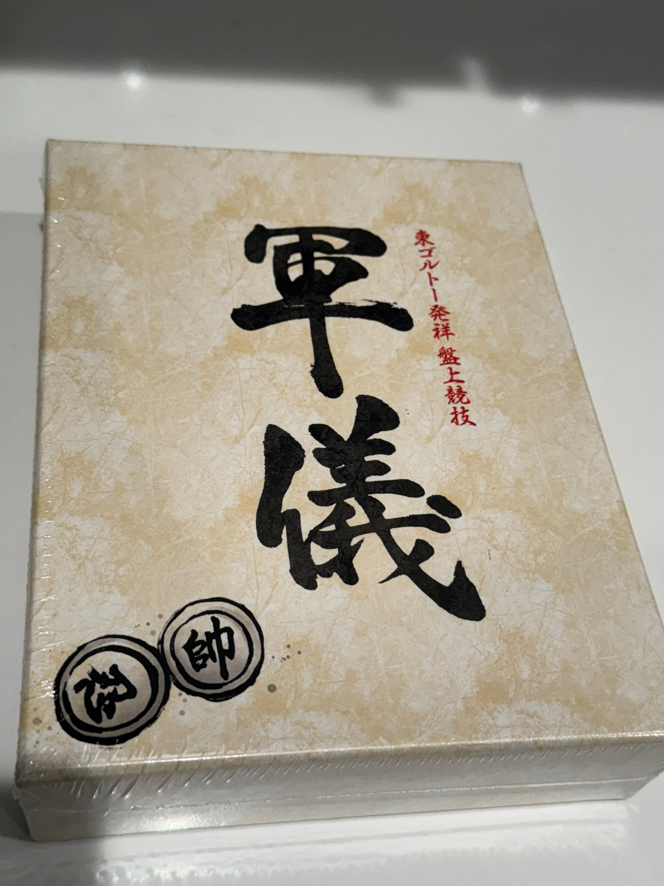

Gungi
Table of Contents
Gungi
Gungi is a board game featured in Hunter x Hunter's Chimera Ant arc. It's similar to chess and shogi, where the goal is to checkmate the enemy Marshall. In the story, Gungi serves as an elaborate metaphor for the conflict surrounding the characters playing, where it's used as a source of substantial foreshadowing. This post assumes you've seen this arc, and will freely refer to events during the show.
An interesting footnote is that Gungi has clearly defined, developed rules, and you can buy an officially licensed set. The rules are very interesting. It bears a lot of similarity to shogi, but there are a few important differences. First, pieces that are captured are removed from play permanently: captured pieces do not become part of your hand like they do in shogi, which follows from the fact that there are white and black pieces. Second, you can "stack" pieces on top of each other, in order to modify them to make them more powerful1. Finally, the beginning of the game features a phase where you get to pick your own starting layout before the game starts2.
This creates an interesting dynamic compared to regular shogi. Unlike in shogi, the removal of pieces from play means that endgames can emerge3. Likewise, the stacking mechanic allows for pieces to have relatively unimpinged movement compared to shogi, where pieces cannot share the same square. Overall it's a board game with a lot of rules and very high complexity – probably too much so for it to be a seriously competitive board game.
This page is going to be home to a lot of notes about Gungi4. I plan on trying to use Gungi as an opportunity to do some board game archeology, so to speak: just understanding the game at all represents an interesting enough project to me.
Gungi Rules Translation
Universal Music Japan released a licensed Gungi set in 2022, which completely sold out almost immediately upon being made available. There were two released versions: a cheaper version, and a high-end wooden goban-like version more faithful to the one used in the show. I managed to get my hand on the cheaper one of these off ebay5:

Here you can find a pdf scan of the attached rulebook, which to my knowledge is unavailable anywhere else on the internet. There are a few versions of the Gungi rules floating around, but I consider the Universal Music Japan rules to be the least likely to be entirely fanfiction. Despite this being the "official" rulebook, there's not much of a record of it anywhere, much less a clear English translation6.
I went ahead and created an English version of the scanned pdf, which you can find here7. Creating this pdf was my primary motivation for buying the set in the first place. I had two big goals that I hoped would follow from having an English version of this rulebook. First, I was hoping that this could serve as a glimpse into some common challenges faced by the scanlation community. Second, I was interested in obtaining some sense of "ground truth" for the "official" ruleset, so that I could create a computer client for the game8.
The translation here is a bit of an art project: I don't speak Japanese, so all of the translation work is done via machine translation tools, followed by my own reworded interpretation to keep everything clear and consistent. The translation was performed by the following process:
- First transcribing the Japanese text using Claude-Sonnet-3.6.
- Using my limited Japanese reading ability to confirm the transcriptions matched9.
- Cross-referencing translations between Google Translate and Claude Sonnet.
- Rewording to keep the text natural sounding.
The images were edited to be in English manually using photopea, which was a relatively substantial effort that took me a few days. I think the results look pretty nice, though, so I'm happy with how it turned out10.
Compared to other commonly referred-to Gungi rulesets, this ruleset has some notable differences, which mostly serve as a mechanism to make the game more like regular shogi. For example, each player gets one General (大) and one Lieutenant General (中), which roughly correspond to the single rook and the single bishop in shogi. Stacking makes one piece more like the other, but otherwise these are easy to understand for shogi players. Additionally, this variant includes a 14th piece type, the Spear11 (槍) which I do not believe ever actually appears in the actual work12.
Maybe some remaining work here would be a translation of the various tutorial and promotional videos released alongside the launch of this version of the game. I'm certain these are probably very interesting for potential English-speaking fans of Gungi, but the OpenAI Whisper pipeline I briefly tried throwing together for this was not really cutting it. There does not seem to be that much media out there about this product, but it's possible I just lack the ability to properly navigate JP subculture internet: would welcome any direction if someone out there has any.
Various In-Progress Ideas
I have various projects in mind surrounding this little Gungi rabbit hole. I will likely be posting this same link to this page on social media multiple times as I complete various components of this, since it would feel weird to keep the translated rulebook to myself just because I haven't completed a self-play RL engine or something.
TODO pyGungi, a Gungi Client
We are going to be doing some computer exploration of the game of Gungi. At a bare minimum, I need to be able to have a virtual board with the basic rules implemented. There are a couple of these floating around, but I need to build one which supports the exact ruleset I am using, as well being generally amenable to being used as an reinforcement learning environment down the line. Most of the code for experiments in this post can be found here.
Likewise, important for this general Gungi effort is the availability of a tool which will allow me to share specific games or moves, in order to build an understanding of how the game could be played at a high level. As such, I'll need something supporting an equivalent portable game notation which will let me embed Gungi games into a webpage like this one.
TODO Building Komugi, a Gungi Engine Trained via Self-Play
Gungi, as you might expect for a game I had to manually translate a rulebook for, does not have an extensive body of human experts playing it13. It is also quite oddly shaped, since the opening phase of the game prevents you from moving pieces at all, and the subsequent "starting position" is both asymmetric and potentially different each game.
This, to me, represents a beautiful opportunity for building something which learns to play high-level Gungi via self-play. There are no human experts to speak of, and the self-play framing is a nice mirror to the story itself, where Komugi's nen awakens and she continues to grow in power through repeated games with Meruem. In effect, we are going to bring Komugi back to life.
TODO (Stretch Goal) Building Komugi-Tutor, a chessGPT-like for Gungi
ChessGPT is a relatively interesting work using annotated games and strong player game databases to train a 3B-parameter language model which plays chess in a conversational setting. Extending this to Gungi is a potentially interesting stretch project here, since unlike chessGPT there's no high volume of human data for the game. With Komugi, we can likely get some sort of model which performs reasonably well at the game, so maybe we can leverage it to train something like chessGPT for Gungi.
Footnotes:
Or, perhaps more importantly, to allow pieces to almost always be able to move around, even if surrounded by other pieces.
A number of chess-like games have things vaguely similar to this, but none quite the same character as seen in Gungi. Janggi, the Korean variant of xiangqi, has a phase where a couple pieces can be moved a little bit before the game starts. Likewise, Chess960, sometimes called Fischer Random, is a Chess variant which randomizes the back rank of a chess game, similarly testing ability from many potential starting configurations, but where you don't get to pick those configurations yourself.
Closest is probably stratego, as it is a board game where you get to pick your own starting setup, but where that's obscured from your opponent. The similarity to stratego is likely why the english localization of Gungi used particular piece names: Marshall instead of King, Spy instead of Ninja/Shinobi, and so on.
The way it works in Gungi is interesting: it functions more like drafting to build a deck in a card game, or maybe like picking a build order in a strategy game. It creates some interesting opportunities for obtaining an advantage before the game even starts, creating a position with interesting imbalances right away, or even playing more nuanced handicap games without doing something extreme like playing at Knight odds in chess.
Anish Giri has some very nice things to say about shogi players, namely that they can reach International Master strength at chess with very little effort. He mentions that the top Japanese chess players often have very strong calculation and unusually lopsided weak endgames, mostly by virtue of playing not very much chess at all. Yoshiharu Habu is perhaps the most famous example, an all-time great shogi player and lifetime Meijin, who quietly reached 2400 FIDE rating in 2014.
The Chimera Ant arc is probably my single most favorite arc of any anime / manga, of all time. I think hxh would have been relatively mediocre without it, and Komugi / Gungi in particular were some of my favorite plot devices ever.
In addition to not having the space in my apartment for a high-end Gungiban (a game I do not yet know how to play, mind you) these things go on ebay for like $700-800 USD, far outside my budget for a post like this.
The closest I can find to the Universal Music Japan ruleset is this reddit post which is a little incomplete, and filtered through Japanese fan -> French fan -> translate to English. This has most of the basic rules outlined, but there's some confusion in parts about which color starts the game, what the different beginner rules are, etc.
There is also an FAQ on their webpage, which can be machine translated normally. This has some useful clarification for stuff like how the Archer moves, etc. Notably, "Marshall Stack" was confusing for me, since it's mentioned nowhere except for the alternative rulesets. Per the FAQ, in the easier rulesets, the Marshall cannot be stacked upon other pieces.
hkpeprah has a C++ codebase for this from 9 years ago, which uses rules adapted from an English translation of a Japanese fan ruleset. These are really different from the Universal Music rules, which makes sense since it predates that version by 6 years. Likewise, gungi.io is a multiplayer client from about 8 years ago which uses the Zaneme ruleset I've linked in the main body of the post. Gungi.io seems mostly dead now, and I'm mostly interested in using this so I can create an engine which plays it, so it was more important to me that I used "official" rules since from my research it doesn't seem like there's a large Gungi community playing some sort of modified fan variant.
I took about a year of formal Japanese in undergrad, which certainly was not enough to translate this rulebook, but was fine for reading hiragana / katakana / verifying two kanji contain the same radicals.
The Gungi rulebook is written in relatively clear, easy-to-understand language, so it's probably a lot easier to translate with these sorts of tools compared to something like Japanese Literature. Douglas Hofstadter, most commonly known for Gödel, Escher, Bach: an Eternal Golden Braid, has a somewhat lesser-known work called Le Ton beau de Marot which touches upon the multifaceted challenges that translating poetry faces. I ran into trouble appreciating translated poems working through an annotated reader of the Hyakunin Isshu, you really lose a lot of meaning for stuff like that. Thankfully not too many puns or double meanings in this board game rulebook!
I went back and forth about how to localize this particular piece's name. The pronounciation is Yari, and there is indeed a shogi variant called Yari shogi that gives most pieces movement similar to the lance. The Yari doesn't move like a lance, so I thought "lance" would be too confusing, and I've seen "Yari shogi" get translated to "spear chess", so I landed upon "spear" as the piece name. I could have stuck with "Yari", but simply romanizing words in translation is a bit too Keikaku means plan for my tastes.
It does not appear in the fan-made rulesets, nor does it seem present on the fandom wiki, leading me to believe it's an original piece by the development team. It's possible it appears somewhere and I simply didn't notice, it but it feels noteworthy that these two sources have various discrepancies between each other (the former outlines 38 pieces, the latter claims 25 in line with the Universal Music rules, etc) but align on not including the spear anywhere. Happy to modify this if someone points it out to me.
There does seem to be some minimal attention from Shogi players for this game, if translated youtube comments underneath the Japanese promotional videos are to be believed. Maybe some way I can make contact with this community?